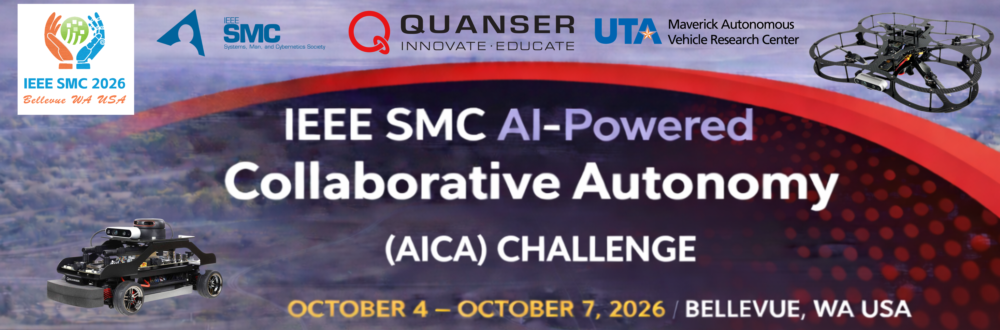
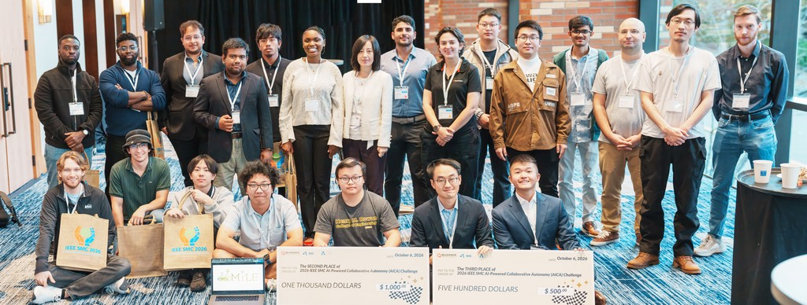
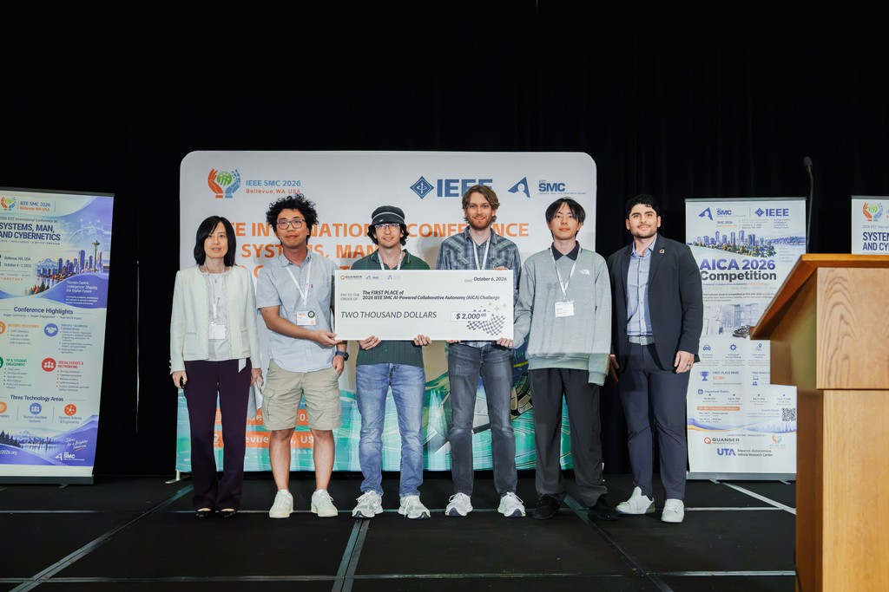
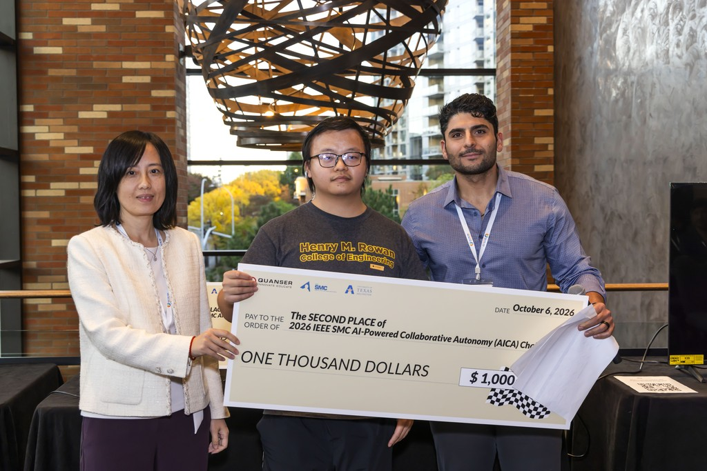
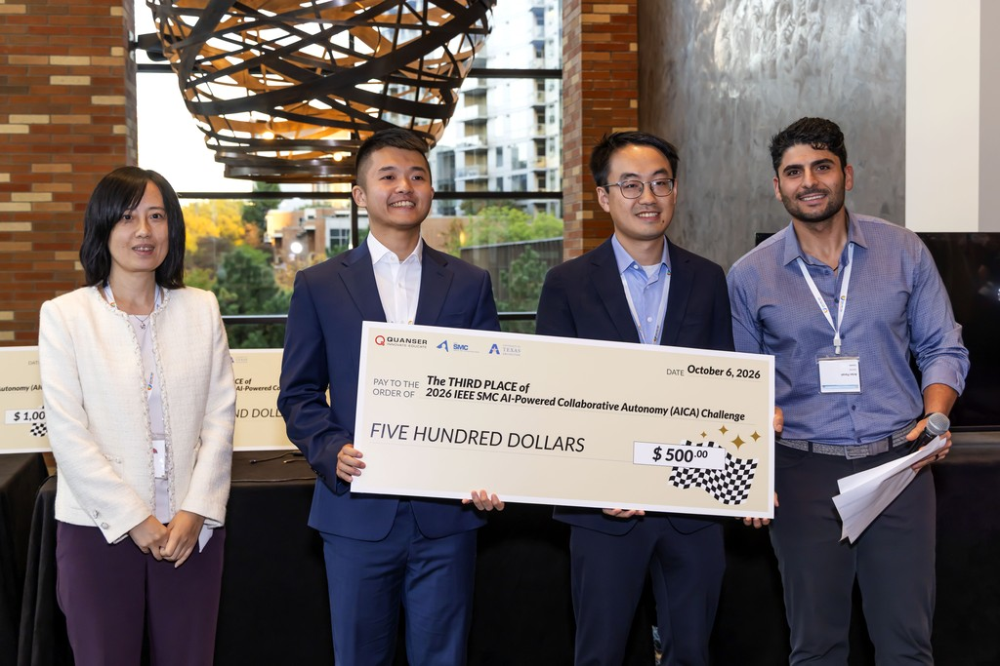

Results
We are delighted to celebrate the successful completion of the inaugural IEEE SMC AI-Powered Collaborative Autonomy (AICA) Challenge! The 2026 competition concluded with the On-Site Finals at IEEE SMC 2026 in Bellevue, Washington, on 7 October 2026.
The AICA Challenge 2026 brought together 23 registered teams with more than 62 team members from 5 countries — the United States, Canada, the United Kingdom, India, and China. This level of participation exceeded our expectations for the first year, and we were thrilled to see so many teams from around the world take on the challenge!
The Virtual Stage of the AICA Challenge was held from 30 April 2026 to 21 August 2026. The following ten highest-placed teams earned invitations to the On-Site Finals!
| Team | Affiliation |
|---|---|
| Aztecs | San Diego State University |
| CSMMC Lab | The Pennsylvania State University |
| SKY Mavericks | The University of Texas at Arlington |
| UA_REU2026 | University of Alabama (REU) |
| For SGA | Tongji University, College of Automotive and Energy |
| Full Throttle | York University |
| ADAMS Lab | University at Buffalo |
| MUSTFly | Macau University of Science and Technology |
| PING | Rowan University |
| Osei | — |
Winners
The On-Site Finals were held in person at IEEE SMC 2026 in Bellevue, Washington, from 4 to 7 October 2026, with the final run taking place on 6 October in front of a conference audience. The competition among the top-performing teams was very intense, and we are glad to announce the winners:
- Aztecs, San Diego State University — first place, awarded $2,000
- PING, Rowan University — second place, awarded $1,000
- CSMMC Lab, The Pennsylvania State University — third place, awarded $500
Congratulations to all teams that competed on site. Your creativity, dedication, and teamwork made this competition a memorable event!
Gallery




Looking Ahead
The next edition of the AICA Challenge will be held at the IEEE SMC 2027 Conference in Vietnam.
Organizers
This competition is organized as part of SMC 2026 and is designed and launched jointly by Quanser and The University of Texas at Arlington Maverick Autonomous Vehicle Research Center (UTA MAVRC). We sincerely thank the IEEE Systems, Man, and Cybernetics Society, Quanser and SMC 2026 for sponsoring this event.
For questions, contact smc.aica.2026@gmail.com.